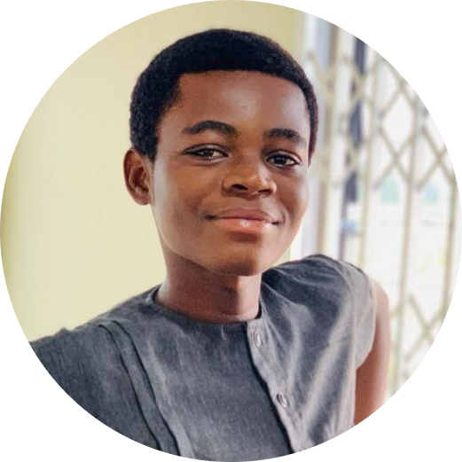

|

Destine K. Honu, a second-year Computer Science student at the prestigious Kwame Nkrumah University of Science and Technology (KNUST) in Ghana, is a name poised to make significant contributions in the realm of technology. Born with an innate curiosity for computing and a passion for problem-solving, my journey to becoming a budding technologist has been marked by determination, academic excellence, and a relentless pursuit of knowledge. Destine's educational foundation was laid at Malincoln Educational Centre, where he honed his basic skills and developed a thirst for learning. His journey continued at Good Shepherd R/C Junior High School, where he further cultivated his academic prowess and demonstrated exceptional aptitude in mathematics and science. It was during these formative years that Destine's fascination with computers began to blossom, igniting a spark that would shape his future endeavors. Upon completing his junior high education, Destine embarked on the next phase of his academic journey at Opoku Ware School (OWASS), renowned for its tradition of academic excellence and holistic development. At OWASS, Destine distinguished himself not only academically but also as a leader among his peers. His time at OWASS equipped him with the skills, knowledge, and confidence needed to excel in his chosen field. Now, as a proud student of KNUST , Destine is pursuing his passion for Computer Science with unwavering dedication. His special interest in web and web applications development serves as a driving force behind his academic pursuits and extracurricular activities. Whether delving into the intricacies of programming languages, exploring the latest advancements in web development frameworks, or collaborating |
with peers on innovative projects, Destine approaches every challenge with enthusiasm and a thirst for excellence. Destine's academic journey is not merely defined by his classroom achievements but also by his active involvement in various co-curricular activities. As a member of student organizations dedicated to technology and innovation, Destine has seized every opportunity to expand his horizons, refine his skills, and contribute to the vibrant tech community at KNUST and beyond. Beyond academia, Destine is a visionary with a keen interest in leveraging technology to address real-world problems and effect positive change in society. Whether through volunteering his time and expertise to local initiatives or conceptualizing innovative solutions to pressing challenges, Destine exemplifies the transformative potential of technology when wielded with purpose and compassion. Looking ahead, Destine K. Honu stands at the threshold of a promising future filled with boundless opportunities and possibilities. With his unwavering commitment to excellence, insatiable curiosity, and passion for innovation, Destine is poised to leave an indelible mark on the world of technology and inspire future generations of aspiring technologists. In Destine K. Honu, the world of computer science gains not only a brilliant mind but also a compassionate soul dedicated to using technology as a force for good. As he continues to chart his path towards success, one thing remains certain: Destine's journey is not just his own; it is a testament to the transformative power of education, determination, and the relentless pursuit of one's dreams. |
| Category | Interest |
|---|---|
| Sports | Football |
| Music | Rock |